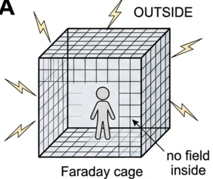
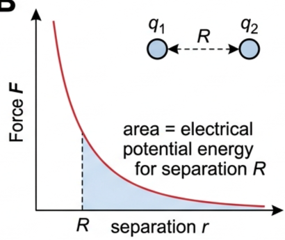
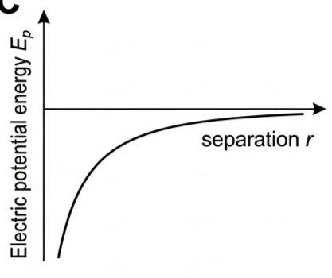
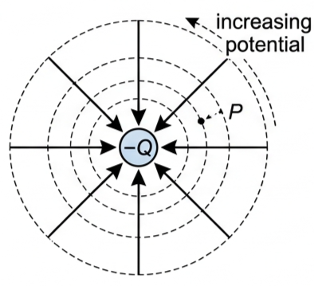
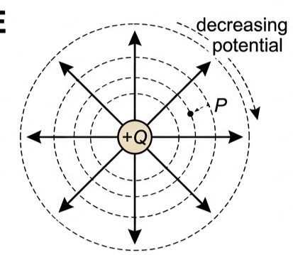
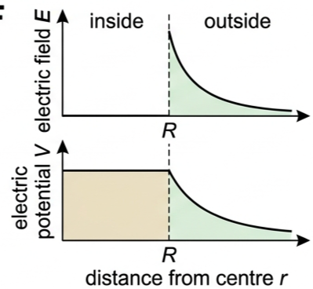
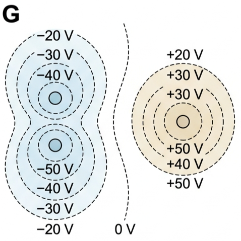
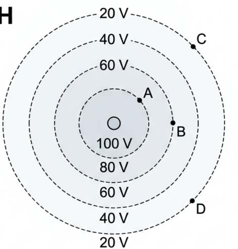
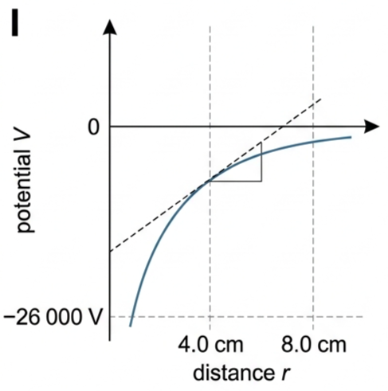

Part of D.2 Electric and Magnetic Fields · Unit D — IB Physics 2023
3 Lesson 3 of 5 · D.2 Electric and Magnetic Fields
Electric Potential
Charges store energy simply by being near each other. This lesson defines that stored energy, turns it into a scalar field called electric potential, and shows how potential, potential difference and field strength are three faces of the same idea.
⚡ Hook – the safest seat in a storm
If lightning strikes a car, the person inside is safe — not mainly because of the tyres, but because the car's metal shell acts as a Faraday cage. The instant an external field is applied, free electrons in the metal redistribute themselves over the outer surface until the field inside is cancelled completely. The same principle is used deliberately to shield sensitive electronic equipment from outside electromagnetic fields.

Fig 1 — A Faraday cage (Fig D2.52): the field is excluded from the interior of any conducting enclosure.
💡 Diagnostic question (think – then read on) — if the electric field strength inside a Faraday cage is always zero, what does that tell you about the electric potential everywhere inside it? Since \(E = -\Delta V_{\mathrm{e}}/\Delta r\), a field of zero means the potential isn't changing anywhere inside — the whole interior sits at one constant potential, equal to the potential of the cage's surface.
Core knowledge
🔋 Electric potential energy
Electric potential energy, \(E_{\mathrm{p}}\), is the work done when bringing all the charges of a system to their present positions from infinity. Just as with gravitational potential energy, the zero of electric potential energy is chosen to be when the charges are separated by an infinite distance.
Electric potential energy of two point charges
$$E_{\mathrm{p}} = k\frac{q_1q_2}{r}$$
This equation works for two point charges separated by \(r\), and also for isolated spherical conductors, where \(r\) is then the distance between their centres. \(E_{\mathrm{p}}\) can also be found from the area under a force–separation graph.

Fig 2 — Area under a force–separation graph equals electric potential energy (Fig D2.46).
Gravitational potential energy is always negative, because gravitational forces are always attractive. Electric potential energy can be either sign: negative if the charges attract (energy must be supplied to pull them apart), or positive if the charges repel (energy is released as kinetic energy if they are free to move apart).

Fig 3 — \(E_{\mathrm{p}}\) against \(r\) for oppositely charged point charges (Fig D2.47): always negative, approaching zero as \(r \to \infty\).
✍️ Worked example D2.9. Two isolated spherical conductors: radii 2.5 cm and 1.5 cm, charges \(-4.7\times10^{-8}\) C and \(-6.3\times10^{-8}\) C, surfaces separated by 1.7 cm. Separation of centres \(r = 2.5+1.5+1.7 = 5.7\) cm. \(E_{\mathrm{p}} = k\dfrac{q_1q_2}{r} = \dfrac{(8.99\times10^9)(-4.7\times10^{-8})(-6.3\times10^{-8})}{5.7\times10^{-2}} = +4.7\times10^{-4}\ \text{J}\). Positive, because the charges repel and would gain kinetic energy if free to move.
📍 Electric potential
Electric potential, \(V_{\mathrm{e}}\), at a point is the work done per unit charge in bringing a small positive test charge from infinity to that point — electric potential energy per unit charge. It is a scalar quantity, with zero defined at infinity. Rewriting \(E_{\mathrm{p}} = k Qq/r\) for a small test charge \(q\) in the field of a larger charge \(Q\), then dividing by \(q\):
Electric potential around a point charge Q
$$V_{\mathrm{e}} = \frac{kQ}{r}$$
The SI unit is \(\text{J C}^{-1}\), better known as the volt (V) — the same unit used for potential difference in Topic B.5.
The potential around a negative charge is negative: increasing \(r\) reduces its magnitude, which is an increase in potential. The potential around a positive charge is positive: increasing \(r\) reduces its magnitude, which is a decrease in potential.
✍️ Worked example D2.10. Potential due to \(Q = -1.00\times10^{-8}\) C at: a. 1.00 m: \(V_{\mathrm{e}} = kQ/r = (8.99\times10^9)(-1.00\times10^{-8})/1.00 = -89.9\ \text{V}\). b. 2.00 m: \(V_{\mathrm{e}} = (8.99\times10^9)(-1.00\times10^{-8})/2.00 = -45.0\ \text{V}\). The potential increases by 45.0 V moving from 1.00 m to 2.00 m from the charge.
🌐 Equipotential surfaces & combining potentials
An equipotential surface (or line) connects points at the same electric potential. Equipotential lines are always perpendicular to field lines, and no work is done moving a charge between two points on the same equipotential.

Fig 4 — Around \(-Q\) (Fig D2.48): a test charge at P moving outward needs work done on it, so \(E_{\mathrm{p}}\) and potential increase.

Fig 5 — Around \(+Q\) (Fig D2.49): a test charge at P moving outward is repelled, so \(E_{\mathrm{p}}\) and potential decrease.
Figure D2.50 shows the field and potential inside and outside a charged conducting sphere: E = 0 everywhere inside a conductor, so the potential is constant throughout the interior, equal to the value at the surface. Outside, both fall away with distance — \(E\) as \(1/r^2\), \(V\) as \(1/r\).

Fig 6 — Field and potential of a conducting sphere (Fig D2.50).
Because electric potential is a scalar, potentials from several charges simply add — no components or angles needed, unlike combining field strengths.

Fig 7 — Potential mapping around three charged spheres (Fig D2.53): scalar potentials add throughout the map.
✍️ Worked example D2.11. Combined potential 34 cm from charge A (\(-1.9\times10^{-7}\) C) and 45 cm from charge B (\(+2.3\times10^{-7}\) C): \(V_{\mathrm{e}} = \left(\dfrac{kQ}{r}\right)_{\mathrm{A}} + \left(\dfrac{kQ}{r}\right)_{\mathrm{B}} = \dfrac{(8.99\times10^9)(-1.9\times10^{-7})}{0.34} + \dfrac{(8.99\times10^9)(2.3\times10^{-7})}{0.45}\) \(V_{\mathrm{e}} = -4.3\times10^{2}\ \text{V}\).
🧭 Potential difference & the potential gradient
Electric potential difference, \(\Delta V_{\mathrm{e}}\), is the work done per unit charge when a charge moves between two points in an electric field — the same p.d. used in circuits (Topic B.5), now applied more generally in two and three dimensions.
Work can also be written as force × distance, \(Eq\Delta r\). Combining this with \(W = q\Delta V_{\mathrm{e}}\) and rearranging gives the field as a potential gradient:
Electric field strength as a potential gradient
$$E = -\frac{\Delta V_{\mathrm{e}}}{\Delta r}$$
The minus sign shows that \(E\) points in the direction opposite to increasing potential. Electric fields exist wherever potential is changing; if potential is constant, the field strength is zero.
Graph mastery
📈 Graphs every examiner uses
Graph type
Axes (X, Y)
Shape
What to read
\(E_{\mathrm{p}}\) vs \(r\) (opposite charges)
X: separation \(r\) Y: potential energy \(E_{\mathrm{p}}\)
Negative curve, rising asymptotically toward zero
Always negative for attraction; magnitude falls as \(1/r\), never reaching zero
\(V_{\mathrm{e}}\) vs \(r\) (point charge)
X: distance \(r\) Y: potential \(V_{\mathrm{e}}\)
Inverse curve, positive for \(+Q\), negative for \(-Q\)
Sign of the curve shows the sign of the source charge; magnitude falls as \(1/r\)
\(E\) and \(V\) vs \(r\) (conducting sphere)
X: distance \(r\) from centre Y: field \(E\) or potential \(V\)
Flat inside (\(E=0\), \(V\) constant); both fall outside
\(E=0\) inside always; \(V\) is constant inside, equal to the surface value, then \(E\) falls as \(1/r^2\) and \(V\) as \(1/r\) outside
Fig 3 (repeated) — \(E_{\mathrm{p}}\) vs \(r\): negative and asymptotic to zero.
Fig 6 (repeated) — flat inside, falling outside for both \(E\) and \(V\).
Worked examples
✍️ Worked example – reading charge and sign from equipotential lines
1
Identify: the sign of a conductor's charge shows in the sign of its equipotential values; potential differences use \(\Delta V_{\mathrm{e}} = V_{\text{final}} - V_{\text{initial}}\), and work uses \(W = q\Delta V_{\mathrm{e}}\).
2
Data: concentric equipotentials around a conducting sphere labelled 100 V, 80 V, 60 V, 40 V, 20 V outward. Point A is near 100 V, B near 60 V, C and D both near 20 V.
3
Equation: all listed potentials are positive, so the sphere is positively charged. Potential difference C to A: \(\Delta V = (+60)-(+20)\). C to D: \(\Delta V = (+20)-(+20)\). Work moving \(q=+2.0\) C from B to C: \(W = q[(+20)-(+40)]\).
4
Answer: sphere is positively charged. C to A: \(+40\ \text{V}\). C to D: \(0\ \text{V}\) (same equipotential, no work needed to move between them). B to C: \(W = 2.0\times[(+20)-(+40)] = -40\ \text{J}\) — the negative sign shows \(E_{\mathrm{p}}\) falls, as a free positive charge is repelled from the positive sphere and gains kinetic energy.

Fig 8 — Equipotential lines around a conducting sphere (Fig D2.57).
✍️ Worked example – field strength and charge from a potential–distance graph
1
Identify: the gradient of a potential–distance graph gives the field strength, \(E = -\Delta V/\Delta r\); once \(E\) (or a potential reading) is known at a given \(r\), \(V_{\mathrm{e}} = kQ/r\) gives the source charge.
2
Data: tangent to the \(V\)–\(r\) curve at \(r=4.0\) cm runs from \(V=-26\times10^{3}\) V up to \(V=0\) over a span \(\Delta r = 8.0\) cm; reading the curve itself at \(r=3.5\) cm gives \(V \approx -1.5\times10^{4}\) V.
3
Equation: \(E = \dfrac{\Delta V}{\Delta r} = \dfrac{0-(-26\times10^{3})}{8.0\times10^{-2}}\), then \(Q = \dfrac{V_{\mathrm{e}}\,r}{k}\) using the reading at \(r=3.5\) cm.
4
Answer: \(E = -3.3\times10^{5}\ \text{N C}^{-1}\) at \(r=4.0\) cm; \(Q = -5.8\times10^{-8}\ \text{C}\) — a single negative point charge is consistent with this variation in potential.

Fig 9 — Potential variation around a negative point charge (Fig D2.58), with the tangent at \(r=4.0\) cm used to find \(E\).
Applications & extensions
🛡️ Real-world: shielding with Faraday cages
Effective electromagnetic shielding is used widely to protect important equipment from external electromagnetic waves, or to stop equipment from emitting electromagnetic signals in the first place — from coaxial cables (an earthed outer copper mesh shields the central signal wire from interference) to entire equipment rooms.
✓ Examiner tip: when explaining why a Faraday cage protects its interior, always mention that free electrons redistribute over the outer surface until the internal field is exactly cancelled — don't just say the cage "blocks" the field.
🔬 Extension: mapping potential experimentally
Potential and p.d. can be mapped using conducting paper: a special paper coated with carbon so it conducts, but with significant resistance. Two electrodes (conductors making electrical contact with a nonmetallic part of a circuit) are placed on the paper, a p.d. is connected across them, and one electrode is kept at 0 V. A movable probe connected through a voltmeter to the 0 V terminal reads the potential at any point, or the p.d. between any two points.
Challenge: two point electrodes 8.0 cm apart are held at 0 V and 10 V. Assuming (as a simplification) that potential varies uniformly along the straight line joining them, predict the potential 3.0 cm from the 0 V electrode. (Answer: \(V = (3.0/8.0)\times10 = 3.8\ \text{V}\) — real point electrodes actually give a non-uniform gradient, steepest near each electrode.)
🔎 Faraday cage in a lightning storm
If a constant electric field is applied to a metal conductor surrounding a space, free electrons very quickly redistribute themselves on the outer surface, depending on the field's strength and direction and the conductor's shape — for a spherical conductor the charge distribution would be the same everywhere on the surface. The safest place to be in a lightning storm is therefore inside a conductor, such as a car or a building with a lightning conductor.
Trap corner
⚠️ Trap corner – common mistakes
Misconception
Correct view
Electric potential energy is always negative, like gravitational PE
\(E_{\mathrm{p}}\) can be positive (repulsion) or negative (attraction) — gravity is always negative only because gravitational forces are always attractive
Confusing \(E_{\mathrm{p}}\) (electric potential energy) with \(E\) (electric field strength)
Different quantities with different units: \(E_{\mathrm{p}}\) is measured in joules, \(E\) in \(\text{N C}^{-1}\). Don't drop the subscript p
Potentials from several charges must be combined with vectors, like field strengths
Electric potential is a scalar — potentials simply add, with their signs, no angles needed
Moving a charge along an equipotential surface takes energy
No work is done moving between two points on the same equipotential, since \(\Delta V_{\mathrm{e}} = 0\)
The potential around a negative charge "increasing" with distance means it becomes positive
It stays negative — "increasing" means its magnitude shrinks toward zero as \(r\) grows
Dropping the minus sign in \(E = -\Delta V_{\mathrm{e}}/\Delta r\)
The sign shows the field points opposite to the direction of increasing potential — drop it and the field direction comes out backwards
⚠️ Most common slip: treating potential like a vector when combining contributions from several charges — reserve vector addition for electric field strength; potentials just add algebraically.
Ep = kq₁q₂/rVe = kQ/rzero at infinityV is a scalarequipotentials ⟂ field linesΔVe = W/qE = −ΔVe/ΔrFaraday cage: E = 0 inside
Practice check — multiple choice
1. Two point charges attract each other. As an external agent pulls them further apart, the electric potential energy of the system
A Stays constant
B Becomes more negative
C Increases (becomes less negative)
D Reaches zero immediately
2. The electric potential 2.0 m from a point charge is 90 V. At 4.0 m, the potential is
A 45 V
B 22.5 V
C 180 V
D 360 V
3. Which statement about equipotential lines is correct?
A They cross field lines at any angle
B No work is done moving a charge along one
C They only exist around negative charges
D They always form straight lines
4. Electric potential is best described as
A A vector quantity, like \(E\)
B Potential energy per unit mass
C Potential energy per unit charge
D Always positive
5. A test charge moves between two points on the same equipotential surface. The work done on it is
A Positive
B Negative
C Zero
D Dependent on the path taken
6. Inside a hollow charged conductor in electrostatic equilibrium, the electric potential is
A Zero everywhere
B Equal to the surface value, and constant throughout
C Decreasing toward the centre
D Increasing toward the centre
Practice check — fill in the blanks
Complete the statements:
Electric potential energy is the work done bringing charges from to their positions. Electric potential is potential energy per unit and is a quantity, not a vector. Equipotential lines are always to field lines. Electric field strength equals minus the potential .
Exam‑style questions
Exam question · Draw / Determine
Q39. There was a force of \(-4.7\times10^{-7}\) N between two point charges when they were separated by 40 cm. a) Draw a force–separation graph to show how the force varies over distances of 10 to 100 cm. b) Use your graph to determine the change in electrical potential energy in the system if the separation was increased from 40 cm to 90 cm. [4 marks]
✓ a) An inverse-square curve through \((0.40\ \text{m}, -4.7\times10^{-7}\ \text{N})\), extended smoothly from 0.10 m to 1.00 m (negative sign shows attraction). ✓ b) Since \(E_{\mathrm{p}} = Fr\): \(E_{\mathrm{p}}(0.40) = (-4.7\times10^{-7})(0.40) = -1.88\times10^{-7}\ \text{J}\). ✓ \(F(0.90) = F(0.40)(0.40/0.90)^2 = -9.3\times10^{-8}\ \text{N}\), so \(E_{\mathrm{p}}(0.90) = (-9.3\times10^{-8})(0.90) = -8.4\times10^{-8}\ \text{J}\). ✓ \(\Delta E_{\mathrm{p}} = -8.4\times10^{-8} - (-1.88\times10^{-7}) \approx +1.0\times10^{-7}\ \text{J}\) (energy supplied, since the charges attract).
Exam question · Determine
Q40. The surfaces of two identically charged spheres are separated by 12 cm. If the radius of each sphere is 2.8 cm and the electrical potential energy in the arrangement is \(3.6\times10^{-4}\) J, determine the charge on each sphere. [3 marks]
✓ Separation of centres \(r = 2.8+2.8+12 = 17.6\ \text{cm} = 0.176\ \text{m}\). ✓ Since both charges are equal, \(E_{\mathrm{p}} = kq^2/r \Rightarrow q^2 = E_{\mathrm{p}}r/k = (3.6\times10^{-4})(0.176)/(8.99\times10^9)\). ✓ \(q = 8.4\times10^{-8}\ \text{C}\) on each sphere.
Exam question · Determine
Q41. Determine how much electrical potential energy is associated with the proton–electron arrangement in a hydrogen atom (separation \(= 5.3\times10^{-11}\) m). [2 marks]
✓ \(E_{\mathrm{p}} = k\dfrac{q_1q_2}{r} = \dfrac{(8.99\times10^9)(1.60\times10^{-19})(-1.60\times10^{-19})}{5.3\times10^{-11}}\). ✓ \(E_{\mathrm{p}} = -4.3\times10^{-18}\ \text{J}\) (negative, since the charges attract).
Exam question · Determine
Q42. If \(4.95\times10^{-5}\) J of energy were transferred when a charge of \(5.1\ \mu\text{C}\) was moved from a certain point to earth (ground), determine the magnitude of the potential at the point. [2 marks]
Q44. Sketch the equipotential and field lines around two point charges of different magnitudes if a) they have similar signs b) they have opposite signs. [4 marks]
✓ a) Field lines curve away from both charges without crossing; closed loop-shaped equipotentials surround each charge separately close in, merging into larger shared loops further out, with a saddle point (null point) between the charges nearer the smaller one. ✓ b) Field lines run from the positive to the negative charge; equipotentials form nested closed curves around each charge individually, pinching together and crossing the line joining the charges at the single point where the net field reverses.
Exam question · Copy / Add
Q45. Figure D2.54 shows the electric field lines around an isolated charged conductor mounted on a stand, denser near its sharper end. Make a copy of the figure and add lines of equipotential. [2 marks]
✓ Equipotentials drawn perpendicular to every field line at each crossing. ✓ Closer together near the sharp end (where the field is strongest) and further apart near the blunt end, following the conductor's outline close in and becoming smoother, more rounded closed curves further away.
Exam question · Sketch
Q46. A coaxial cable has a central copper wire, an insulating layer, and an outer copper mesh kept at 0 V, which reduces interference to and from other electromagnetic waves. Sketch a cross-section of the cable and add electric field lines and equipotential lines. [3 marks]
✓ Radial field lines pointing outward from the central wire to the outer mesh (or inward, depending on the sign of the signal). ✓ Concentric circular equipotential lines between the wire and the mesh, closer together near the central wire where the field is strongest. ✓ No field lines outside the mesh — it is earthed and shields the interior from, and the exterior from, outside electromagnetic fields.
Exam question · Sketch
Q47. Figure D2.56 represents the variation of potential between a −40 V circular conductor and a +40 V L-shaped conductor, with equipotential lines every 10 V between them. Sketch the electric field pattern of this arrangement. [2 marks]
✓ Field lines drawn perpendicular to every equipotential line, pointing from the +40 V conductor toward the −40 V conductor. ✓ Lines packed most closely wherever the equipotentials are closest together (strongest field), spreading out in the open space away from both conductors.
Exam question · Determine
Q48. A hollow conducting sphere has a radius of 6.3 cm. If it is charged with \(-4.3\) nC, determine values for the electric field strength and the electric potential at a distance of a) 20.0 cm from the centre of the sphere b) 3.0 cm from the centre of the sphere. [5 marks]
✓ a) Outside the sphere: \(E = kQ/r^2 = (8.99\times10^9)(4.3\times10^{-9})/(0.20)^2 = 9.7\times10^{2}\ \text{N C}^{-1}\) (pointing inward, since \(Q\) is negative); \(V = kQ/r = -1.9\times10^{2}\ \text{V}\). ✓ b) 3.0 cm is inside the (hollow) conducting sphere, so \(E = 0\). ✓ \(V\) is constant inside, equal to the surface value: \(V = kQ/R = (8.99\times10^9)(-4.3\times10^{-9})/0.063 = -6.1\times10^{2}\ \text{V}\).
Exam question · Identify
Q49. A point charge of \(-1.9\times10^{-7}\) C is placed 56 cm from another point charge of \(5.6\times10^{-8}\) C. Identify the location of one place where the electric potential is zero. [3 marks]
✓ The null point lies between the two charges, closer to the weaker one (\(5.6\times10^{-8}\) C). Let \(x\) be its distance from the \(-1.9\times10^{-7}\) C charge: \(\dfrac{1.9\times10^{-7}}{x} = \dfrac{5.6\times10^{-8}}{0.56-x}\). ✓ Solving: \(x \approx 0.43\ \text{m}\). ✓ The potential is zero at a point 43 cm from the \(-1.9\times10^{-7}\) C charge (13 cm from the \(5.6\times10^{-8}\) C charge), on the line joining them.
Exam question · Determine
Q50. Two points in an electric field have potentials of 12.7 V and 15.3 V. Determine how much energy will be transferred when an electron moves between these points: a) in eV b) in J. [3 marks]
✓ \(\Delta V = 15.3-12.7 = 2.6\ \text{V}\). ✓ a) An electron carries charge \(e\), so the energy transferred is exactly 2.6 eV. ✓ b) \(W = e\Delta V = (1.60\times10^{-19})(2.6) = 4.2\times10^{-19}\ \text{J}\).
Exam question · Calculate
Q51. Calculate how much energy is gained by a charge of 2.0 C when it passes through a battery that has a terminal p.d. of 12 V. [2 marks]
Q52. A charge of \(+4.5\) C is moved from point P (near the +40 V conductor) to point Q (near the −40 V conductor) in Figure D2.56. a) Determine how much energy is transferred. b) State whether work is done on the charge, or by the charge. [3 marks]
✓ a) \(\Delta V = V_{\mathrm{Q}} - V_{\mathrm{P}} = (-40)-(+40) = -80\ \text{V}\); \(W = q\Delta V = (4.5)(-80) = -360\ \text{J}\), so 360 J of energy is transferred. ✓ b) The negative sign shows electric potential energy falls by 360 J as the positive charge moves from high to low potential. ✓ Work is done by the field on the charge (converted into kinetic energy if the charge is free to move) — no external agent needs to supply energy for this move.
Exam question · State / Determine
Q53. Figure D2.59 shows how the electrical potential varies with distance, \(r\), from a certain point, P. a) State where the electric field strength is a minimum. b) Determine the magnitude of the electric field strength: i) 12 cm from P ii) 32 cm from P. [3 marks]
✓ a) The field strength is a minimum wherever the \(V\)-\(r\) graph is flattest — i.e. where its tangent gradient has the smallest magnitude. ✓ b) Draw a tangent to the curve at each distance and use \(E = -\Delta V/\Delta r\) on that tangent (the field strength must be read from the actual graph's gradients, since exact values are only visible in the printed figure). ✓ A steeper tangent at one distance than the other means a larger \(|E|\) there.